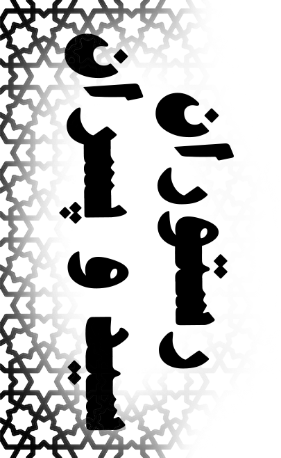
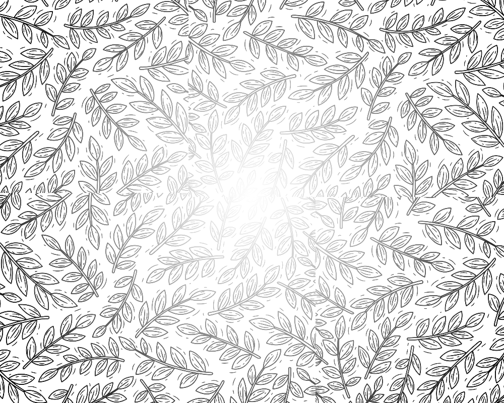

چلو
شیشلیک 632000 تومان
شیشلیک 632000 تومان

دارای :
برنج ایرانی
400 گرم گوشت شیشلیکی
دورچین
رستوران سید و پسران با افتخار تلاش میکند تا با مجموعهای از غذاهای ایرانی ناب و اصیل، تهیهشده با استفاده از بهترین مواد و توسط سرآشپزان ماهر، به مهمانان خود بهترین تجربه را ارائه دهد. منوی غذایی ما شامل تنوع بینظیری از غذاهای مختلف است که با یکبار چشیدن، لذت و مزه آنها را برای همیشه به یاد خواهید داشت.